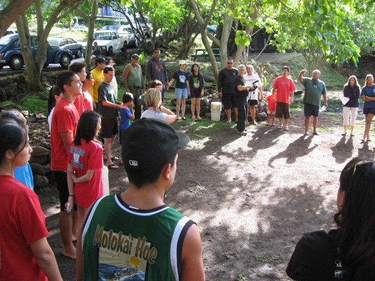
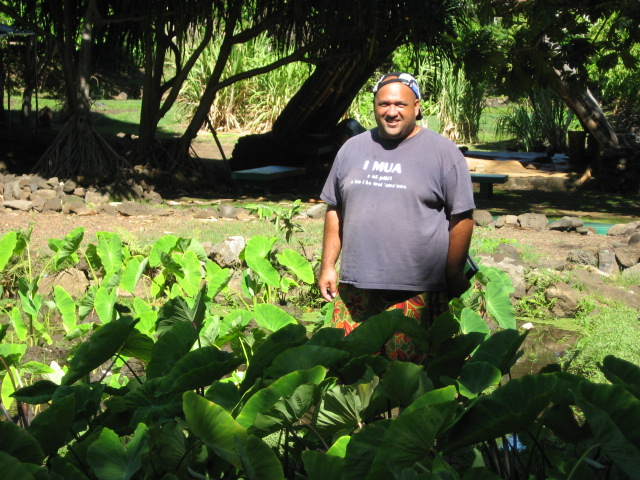
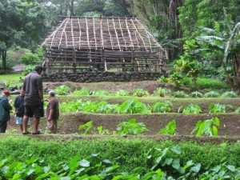
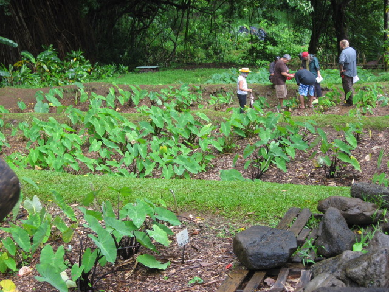
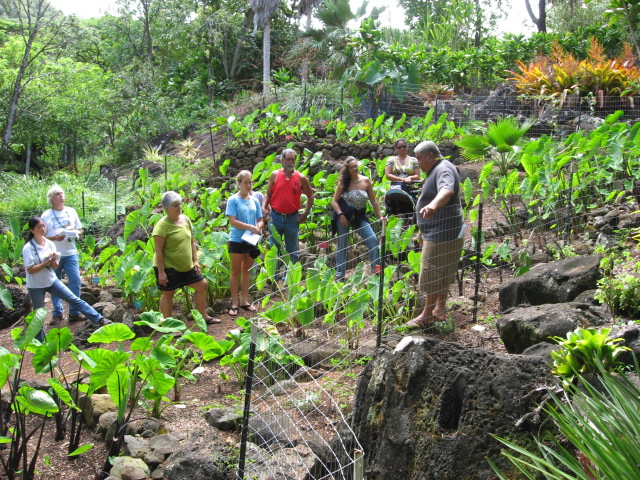
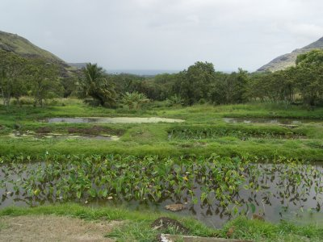
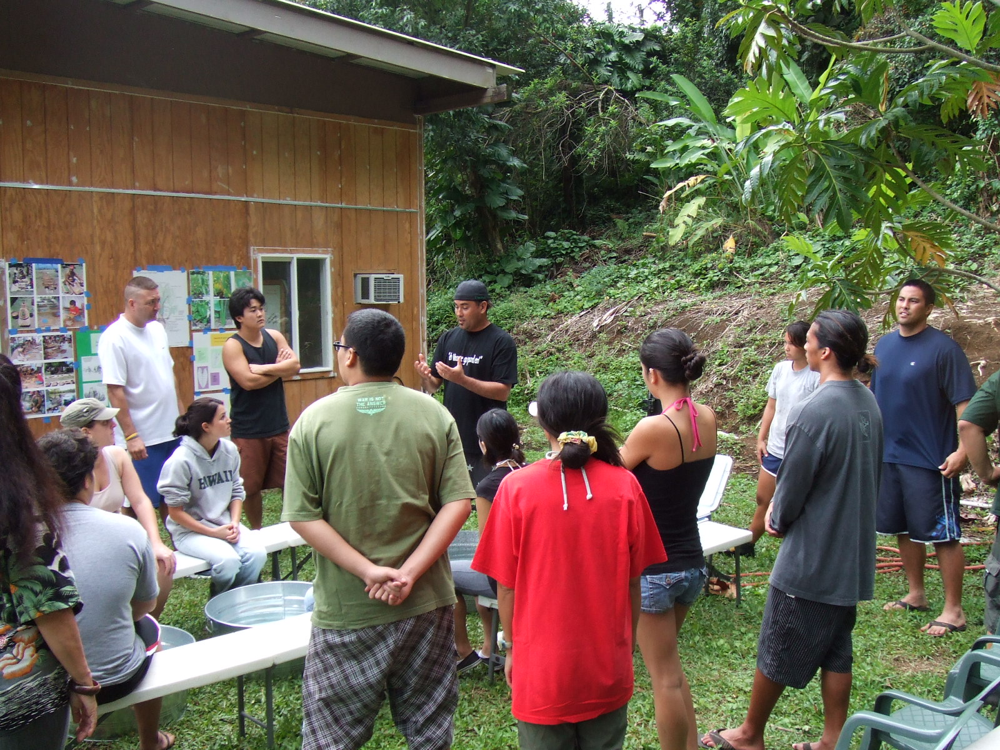

1. Ka Papa Lo‘i O Kānewai Native Hawaiian Cultural Gardens, UH Manoa
Offers opportunities for an interactive class on Lo‘i cultivation, the fields of taro. The Lo‘i is located along the Mānoa river, right next to the U.H. Hawaiian Studies building.
For permission to enter, call (808) 945-1562 or (808) 956-6825, send email to .(JavaScript must be enabled to view this email address), or see the Hawai‘inuiākea School of Hawaiian Knowledge home page at http://manoa.hawaii.edu/hshk/


Hiapo Cashman, Director
2. Lyon Arboretum in Mānoa Valley
3680 Mānoa Road
Honolulu, HI 96822
Ph. (808) 988-0456

Photo credit Weston Yap

Photo credit Weston Yap
3. Waimea Valley Botanical Collection
59-864 Kamehameha Hwy.
Hale`iwa, HI 96712
(808) 638-7766
Mission: Preserve and perpetuate the human, cultural and natural resources of Waimea for generations through education and stewardship. http://www.waimeavalley.net/
Midweek Article: Waimea Valley Harbors Rare Endangered Plants in Kalo Collection

4. Waimanalo Research Station, College of Tropical Agriculture and Human Resources
Go to CTAHR for more information.
Phone: (808)259-7201, Fax: (808)259-9434
E-mail: .(JavaScript must be enabled to view this email address)
Address:
41-698 Ahiki Street
Waimanalo, HI, 96795
Or contact:
Cooperative Extension Office
3050 Maile Way, Gilmore 203
Honolulu, Hawaii 96822
tel: (808)956-8139, fax: (808)956-9105
.(JavaScript must be enabled to view this email address)
5. Ka‘ala Farms - Waianae
The Cultural Learning Center at Ka‘ala is dedicated to the preservation and practice of the Culture of the Po‘e Kahiko (People of Old).
This is a community development organization.
- Cultural Learning Center
- School partnerships and Department of Education
- Land use and Resource Management Programs
- Family Programs and Economic Opportunities
- Learning Center Outreach
If you need to schedule a group on a day different from the regular school day, or have any other questions about visits, please call the office and talk to the visits coordinator at (808) 696-4954
Located along Waianae Valley Road

Photo credit Martha Cheng
6. Hui Ku Ma’oli Ola, Oahu – Haiku area
Groups can schedule educational tours and workshops
